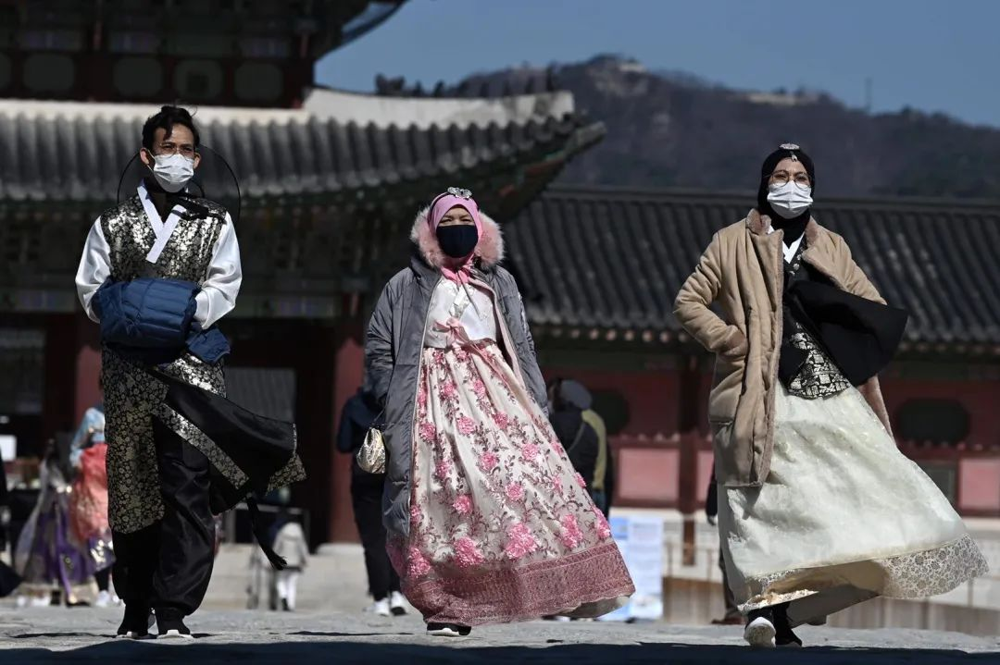
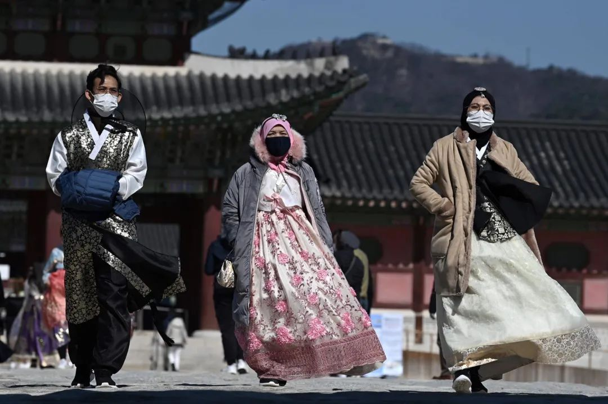

韩国日增229例确诊，累计病例连续三天翻番涨8倍
原文链接 备份链接 图片来源：Yonhap “ 韩国的确诊病例总数从2月19日的51人激增至22日的433人，相当于19日的8倍。 ” 韩联社消息，韩国中央防疫对策本部22日通报称，截至当天下午4时，韩国国内再新增87例新冠肺炎确诊病例， …
 *************▲*************2月23日，在韩国首尔，身着韩服的游客在景福宫游览。 （新华社/法新/图）
*************▲*************2月23日，在韩国首尔，身着韩服的游客在景福宫游览。 （新华社/法新/图）
全文共2759字，阅读大约需要7分钟。
本文首发于南方周末 未经授权 不得转载
文 | 南方周末特约撰稿 姚萌萌
责任编辑 | 于冬
继2020年2月19日感染者猛增22例之后，韩国中央防疫对策本部2月22日通报称，韩国又新增229例新冠病毒感染者。2月23日，韩国又新增123例，累计确诊新冠病毒患者556例。
韩国多地疫情告急，新冠病毒感染者已遍及全境。接下来，疑似病例中将会有更多确诊患者。截至发稿时，韩国已有2.2万余人接受新冠病毒检测，其中仍有6039人的检验结果未公布。
1
“对居住在大邱市的61岁女性进行冠状病毒检测，结果成为第31例确诊患者。”2月20日，韩国中央防疫对策本部新闻发言人表示。
这名61岁的女性，被韩国媒体简称为“31号”。她被认为是导致大邱市感染人数暴增的主要原因，这名“超级传播者”直接感染了至少37人。
经韩国卫生部门调查，“31号”从未出国，也未发现其上游确诊患者，她的感染路径至今成谜，但其活动轨迹已调查清楚：发高烧后，她仍在首尔和大邱活动了一星期。
她多次参加“新天地教会”的聚集活动。截至2月22日下午4时，该组织在大邱的八千多名信徒中，至少有43人确诊，四百多人出现相关症状，其他成员已被告知要进行“自我隔离”。
“新天地教会”已成为病毒传播的温床。韩国大邱市官员说，该市还有128个确诊病例与“新天地教会”有关。
公开资料显示，“新天地教会”创立于1984年，在韩国大约有20万信徒，在世界其他国家和地区还拥有12万信众。创建者是现年89岁的李万熙（Lee Man-hee），他自称是《圣经》中“神应许的牧者”“耶稣转世再临之主”。
“新天地教会”从事有争议的传教活动，被韩国媒体认定为“邪教组织”。事发后，“新天地教会”在大邱和庆北的74处教堂已关闭，其它地区则改为网络传教。
大邱地方政府还公布了“31号”的行踪。2020年2月17日下午3时30分，她出现严重的发热症状，前往当地保健所接受检查，随即被隔离进入大邱市医疗院。
入院后，“31号”仍导致多起“院内感染”。其中，一名来自大邱新韩医院40岁的女工作人员已确诊，“31号”曾去过的另外两家医院的急诊室当天也关闭。
急诊室关闭和“院内感染”，直接触发韩国公众对国内医疗防疫系统崩溃的担忧。截至2020年2月21日，韩国至少出现四起群体性“院内感染”现象。
其中，庆尚北道清道郡的大南医院已经实施彻底“封院”，该院至少有16人确诊，包括5名护理人员，还有600名左右的医疗人员和病患正接受进一步的采检。
2
2020年2月22日，韩国单日新增229例新冠病毒感染者。当天上午，韩国新增142例确诊病例，下午又报告发现87例，包括大邱和庆尚北道地区69例，江原道5例，京畿道4例，首尔3例，光州2例，大田、釜山、蔚山、全罗南道各1例。
新冠病毒感染者已遍布韩国各地。2020年2月21日，韩国东北部的江原道尚无一例感染，次日也出现两名确诊患者。韩国中央防疫对策本部要求各地警惕“局部爆发式增长”。
至此，韩国也成为继中国湖北和停靠日本横滨港的“钻石公主号”之外的两大“群聚性感染”区域。2020年2月18日，韩国政府决定向“钻石公主号”派遣空军3号飞机，带回6名韩国人和1名日本配偶等7人。
随着“31号”超级传播者的出现，新冠病毒在韩国的传播也从“外来输入”为主，迅速转变为“社区内源型传播”，并相继出现4个死亡病例。
韩国首个死亡病例是一名年轻男子。2020年2月18日上午9点5分，首尔冠岳区接到报警称，一名三十多岁男子失去意识，没有呼吸。移送至医院后，该男子于当天上午10点30分许死亡。
“（死者）肺部有出血的痕迹。”韩国《朝鲜日报》还进一步透露，该男子上月曾同家人前往中国海南旅行，为期3天。
2020年2月20日，韩国出现第二个死亡病例。死者为一名患有基础病的63岁男性，一直在庆尚北道清道郡一家医院因精神分裂症住院多年。这名患者死亡后，韩国卫生部门对其进行病毒检测，结果显示为阳性。
第三个死亡病例是一名41岁的男性，他被发现死在庆尚北道庆州的家中，尸检显示新冠病毒阳性。第四个死亡病例是庆尚北道清道大南医院的工作人员，一名57岁的男子，他的病毒检验仍在进行。
新冠疫情还危及韩国军营。近日，一名22岁的海军士兵成为韩国第一个军人确诊病例，他在回大邱老家探亲时感染。
前文所述，大邱已出现“局部爆发式感染”。该地还驻扎着大批韩国部队和设有美国军事基地，军事和非军事人员及其家属累计一万多人。
美军已限制人员进出军事基地，并对与“新天地教会”大邱教堂有接触的美方人员实施检疫和隔离。
韩国驻军也开始进行检疫和隔离。据韩联社透露，至少有3名韩国士兵确诊感染，这一数字可能会上升，因为2月10日之后去过大邱和庆北的韩国军人多达一千多人。
为防止疫情在军营进一步扩散，2月22日，韩国境内所有军事基地都宣布紧急封闭状态，并上调危险等级，所有军官和士兵一律取消休假和外出。
3
2020年2月21日，韩国总理丁世均宣布大邱市和庆尚北道清道郡为“传染病特别管理地区”。
当前，大概七成的新冠病毒确诊病例都集中在“特管区”。其中，人口250万的大邱是韩国第四大城市，该市的学校和医院均发现确诊病例，他们和大量的疑似病例，已占有了该市医疗机构87.5%的床位。
“这次疫情是一场史无前例的危机。”大邱市长要求民众不要轻易出门，出门则必须戴口罩，并勒令商家临时停业。
但“特管区”似乎并不等同“封城”。2月21日，韩联社报道说大邱的街道上仍不乏人来人往。23日，大邱的街道已空无一人。
韩国政府宣布大邱等两地为“特管区”后，2020年2月21日，笔者发现首尔地铁不少人已戴口罩出行。
韩国首尔市政府当天还宣布：暂停所有市内集会活动，违者罚款300万韩元。
但仍有不少韩国民众不顾政府禁令，坚持大规模聚会。2020年2月22日，数万人的游行队伍从光化门和首尔火车站附近集合，如期举行抗议活动。
韩国电视台的直播画面显示，众多游行者人挨着人，不少人并没有戴口罩，他们之间甚至相互分发面包、蛋糕等食品。
“请停止集会，要考虑自己和他人的安全。”韩国首尔市长朴元淳来到现场，劝阻游行的人群回家，但遭到拒绝。
在光化门附近，一名集会组织者还发表演说，“在户外感染上（新冠病毒）是不可能的事情。”
“机会之窗正在缩小”，韩国中央事故对应本部和中央防疫对策本部一致认为，新冠病毒感染扩散已到了“极其严重”的地步，但韩国政府内部似乎对疫情应对一直犹豫不决。
2020年2月22日，韩国中央应急处置本部副本部长金刚立在记者会上表示，政府决定暂不上调新冠疫情预警级别，仍维持“警惕”级别；只有在“全国范围内出现社区传播现象”时，才会采取最高的“严重”级别。
有韩国学者认为，2019年以来，韩国经济正面临着50年来“最糟糕的状况”，韩国政府不愿因为“过度防疫”而伤害经济增长。


文章已于修改
原文链接 备份链接 图片来源：Yonhap “ 韩国的确诊病例总数从2月19日的51人激增至22日的433人，相当于19日的8倍。 ” 韩联社消息，韩国中央防疫对策本部22日通报称，截至当天下午4时，韩国国内再新增87例新冠肺炎确诊病例， …
原文链接 备份链接 韩国青瓦台。图片来源：维基百科 记者 ：肖恩 “ 韩国已累计确诊204新冠肺炎病例，是海外病例第二多的国家，仅次于邻国日本。 ” 在教会和军队相继出现新型冠状病毒肺炎感染病例后，十几名来自韩国总统府青瓦台的警卫也因为曾 …
原文链接 备份链接 2月19日，韩国大邱市疑似出现超级传播事件的教堂附近，工作人员正在消毒。来源：中央日报 记者：潘金花 “ 大邱市一药店店员表示，MERS时期大邱没有出现确诊病例，人们并没有感到特别担心，但这次大家就像“打仗一样”，非常 …
原文链接 备份链接 IMF认为，若一切向好的方向发展，中国经济有望从二季度开始恢复正常。近日个别国家和地区确诊病例激增，确诊首例新冠病毒感染病例的国家和地区也在增加，是新感染群体的感染源越来越难以查明？还是疫情传播到了某个新的临界点？ …
原文链接 备份链接 IMF认为，若一切向好的方向发展，中国经济有望从二季度开始恢复正常。近日个别国家和地区确诊病例激增，确诊首例新冠病毒感染病例的国家和地区也在增加，是新感染群体的感染源越来越难以查明？还是疫情传播到了某个新的临界点？ * …